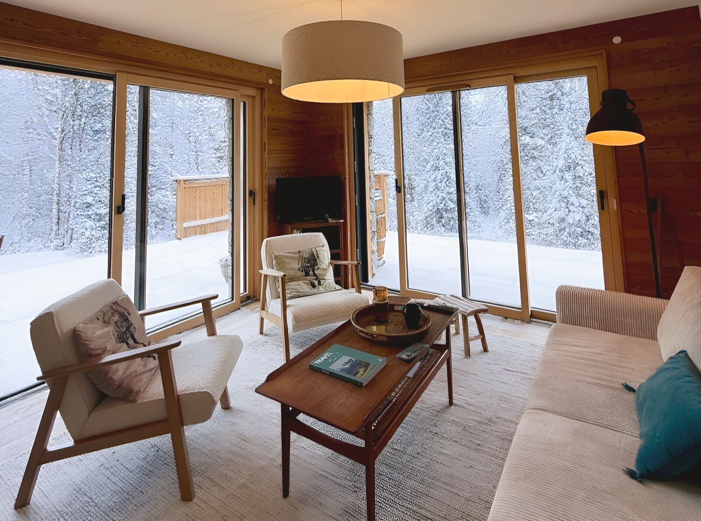

Excursions d'une journée depuis Les Carroz d'Arâches

Les Carroz d'Arâches ont un atout que l'on sous-estime souvent : leur position. À 1 140 m d'altitude, la station est à 15 minutes de la sortie 19 de l'A40 — l'autoroute qui relie Genève au tunnel du Mont-Blanc. Autrement dit, depuis le Lodge, une bonne partie de la Haute-Savoie tient dans une journée, et vous rentrez dormir dans vos draps le soir.
Voici les cinq escapades que nous conseillons le plus souvent à nos voyageurs, de la plus proche à la plus lointaine.
1. Le Cirque du Fer-à-Cheval, à Sixt (45 min à 1 h)
C'est l'excursion nature par excellence, et elle se fait en famille. Le Cirque du Fer-à-Cheval se trouve à 6 km du village de Sixt-Fer-à-Cheval, au cœur de la réserve naturelle de Sixt-Passy, la plus vaste de Haute-Savoie. Une muraille calcaire de plusieurs kilomètres, une trentaine de cascades au printemps et en début d'été, et un chemin quasi plat le long du Giffre qui convient aux poussettes comme aux jambes fatiguées.
Deux points pratiques à connaître avant de partir : le stationnement est payant de mai à septembre (environ 5 € par véhicule), et depuis 2026 l'accès au site peut être fermé en cas de vigilance météo (orages, fortes pluies, crues). Un coup d'œil au bulletin Météo-France Haute-Savoie avant de prendre la route évite une déception.
Anecdote pour les skieurs : c'est ce même cirque que l'on surplombe l'hiver depuis la Piste des Cascades, la longue bleue de 14 km qui descend de Flaine — l'une des signatures du Grand Massif.
2. Samoëns, village de caractère (20 min)
Sur la route de Sixt, Samoëns mérite qu'on s'y arrête. C'est l'une des cinq stations du Grand Massif, mais surtout un vrai village savoyard avec sa place ombragée, ses maisons de tailleurs de pierre et le jardin botanique alpin de la Jaÿsinia, étagé au-dessus du bourg, qui rassemble des plantes de montagne du monde entier. Idéal pour une demi-journée tranquille, marché et terrasse compris.
3. Chamonix et le Mont-Blanc (environ 1 h)
Une heure d'autoroute suffit pour basculer dans la vallée de Chamonix. Le grand classique reste le téléphérique de l'Aiguille du Midi, qui grimpe à 3 842 m face au Mont-Blanc, suivi du train du Montenvers vers la Mer de Glace. Réservez vos créneaux en ligne : en août, les départs du matin partent vite. Partez tôt, le retour par l'A40 est direct.
4. Annecy et son lac (environ 1 h)
Changement d'ambiance total : canaux, vieille ville colorée, Palais de l'Isle et l'un des lacs les plus purs d'Europe. On y va pour flâner, louer un bateau électrique ou se baigner. Si vous cherchez plus près et plus calme, nos spots de baignade autour des Carroz se rejoignent en 15 à 25 minutes.
5. Genève (50 min)
La grande ville de la région est à 50 minutes : jet d'eau, vieille ville, musées, et un aéroport à 45 minutes pour les amis qui vous rejoignent en cours de semaine. Pensez à la vignette autoroutière suisse si vous restez sur les axes rapides côté helvétique.
Nos conseils pratiques depuis le Lodge
- Partez avant 9 h en juillet-août : les vallées de Chamonix et d'Annecy se remplissent vite, et le stationnement devient le vrai sujet.
- Votre voiture dort au sec : le Lodge dispose d'un parking privé couvert, équipé d'une prise de recharge Green'Up pour les véhicules électriques.
- Gardez une journée « sur place » : après deux excursions, une randonnée au départ des Carroz et une soirée sur la terrasse plein sud font le plus grand bien.
- Le bain nordique après la route : c'est le meilleur remède connu contre une journée de voiture et 12 km à pied.
Envie de séjourner au Lodge ?
Appartement 4★ pour 6 personnes, terrasse plein sud de 45 m² et bain nordique, au centre des Carroz d'Arâches. Clémentine, notre conciergerie, vous accueille sur place.
Voir les disponibilités